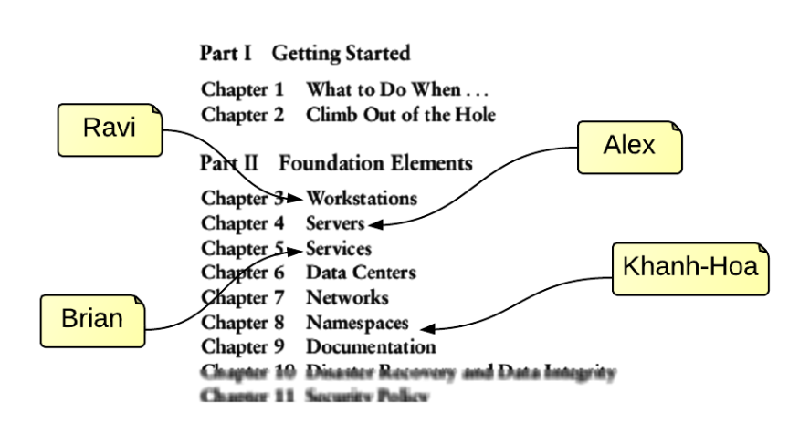
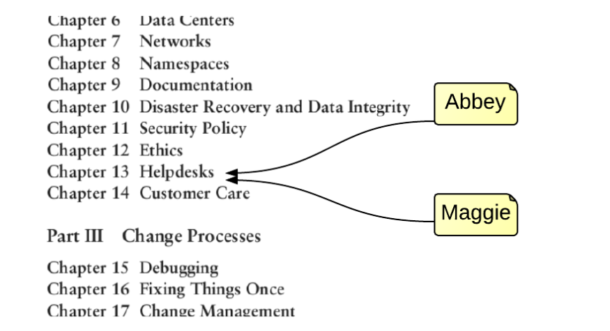
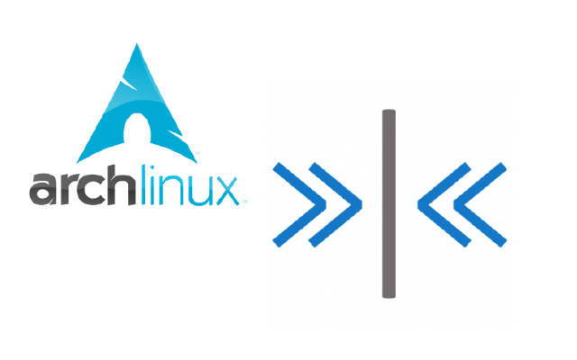
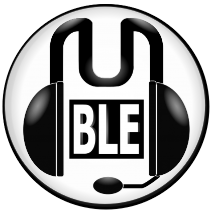
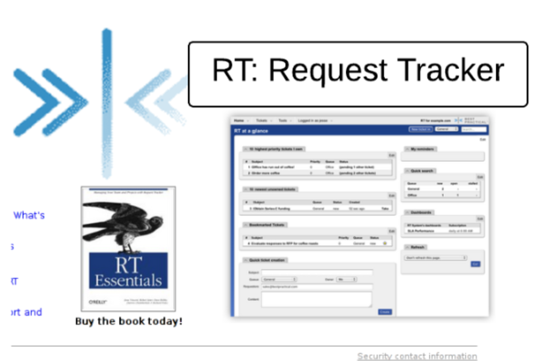
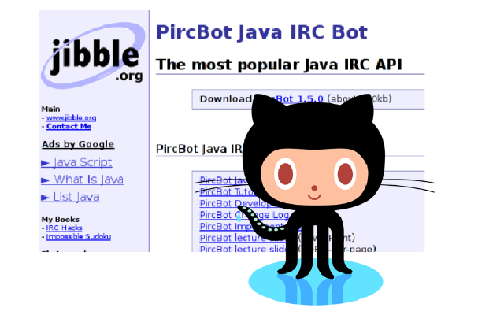
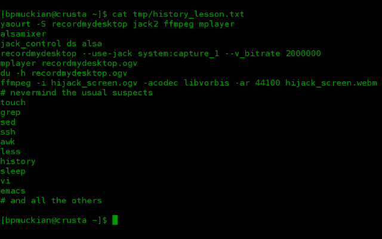

A revised method and means
of educating information
systems administrators
Team 3 - Sprint 3
in the home stretch
or on our last leg?
a little context:

more context:

workstation work

serve it up

a demo for you

automating IRC operations

something slightly wicked
fear not, the commandline

questions?
←
→
/
Go to slide:
#